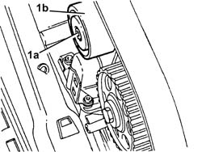
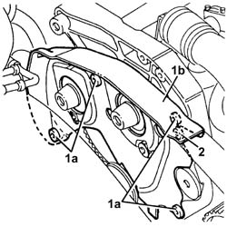
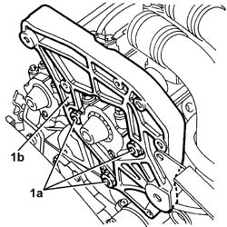
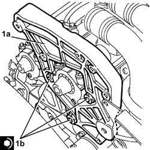
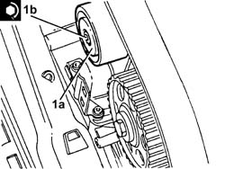
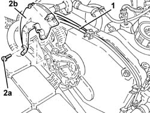
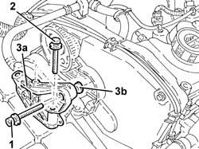
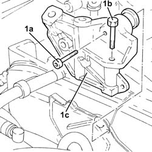
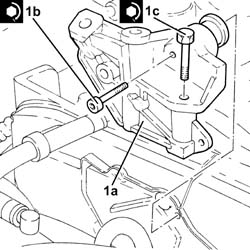

1008C14 engine link bracket - r r
- Path
- Procedures > 10 ENGINE > 1008 POWER UNIT SUPPORTS > 1008C power unit reaction elements > 1008C14 engine link bracket - r r
- Kind
- repair procedure (removal / refitting; the operation number is the code)
- Applies to
- engines: 3.2 V6, 1.9 JTD 8V, 1.9 JTD 16V; all production periods
- Interactive page
- https://sloeber94.github.io/elrnDB-a147/en/#/3024947
Applies to: engines: 3.2 V6; all production periods
 Removing
Removing
 Refitting
RefittingPosition the vehicle on the ramp.
Proceed with removal 4450B04 right front wheel r r .
Proceed with removal 7055B64 Engine compartment DUST shield in front wheel arch (one), left or right - R.R. .
Proceed with removal 1092G10 single engine belt r r .
Proceed with removal 1092A10 Crankshaft services PULLEY - R.R. .
Proceed with removal 1008C10 power unit upper reaction link r r .
Proceed with removal 1032D12 timing system protective cover(s) - r + r .
Proceed with removal 1016A42 left hand cylinder head ignition coil cover - r+r .
Proceed with removal 5510C16 left hand cylinder head ignition coil - r+r .
Proceed with removal 1048A28 vacuum air circuit resonator pipe - r+r .
Proceed with removal 1016A30 left cam cover - r + r and replace gasket .
Proceed with removal 1072B50 sleeves connecting air capacity box to inlet manifold is - r+r .
Proceed with removal 5510C18 right hand cylinder head ignition coil - r+r .
Proceed with removal 1016A34 right-hand cam cover - r + r and replace gasket .
Proceed with removal 1032B10 toothed timing belt - r + r for timing adjustment or replacement .
Proceed with removal 1032B58 toothed driven pulley right-hand head - r + r .
1. Undo the bolt (1a) and remove the upper fixed timing belt tensioner (1b).

Applies to: engines: 3.2 V6; all production periods
1. Undo the bolts (1a) and remove the timing belt right rear protection (1b).
2. Undo the bolt fixing the left rear protection to the bracket on the engine for the reaction rod.

Applies to: engines: 3.2 V6; all production periods
1. Undo the nuts (1a) and remove the bracket on the engine for the reaction rod (1b).

Applies to: engines: 3.2 V6; all production periods
Refitting
Removing1. Fit the bracket on the engine for the reaction rod (1a) and fix it tightening the nuts (1b) to the recommended torque.
 | Fastening | Component | Ø | Value (daNm) |
|---|---|---|---|---|
1b | Nut | REACTION LINK BRACKET ON ENGINE | M10 | (Cylinder head side) 4.5 ÷ 5.5 |

Applies to: engines: 3.2 V6; all production periods
Tighten the bolt fixing the left rear protection to the bracket on the engine for the reaction rod.
Place the right rear timing guard back in its housing and fasten it using the bolts.
1. Place the upper timing fixed tensioner (1a) back in its housing and secure it by tightening the bolt (1b) to the recommended torque.
| Fastening | Component | Ø | Value (daNm) |
|---|---|---|---|---|
1b | Bolt | FIXED TENSIONER | M10 | (Cylinder head side) 4.5 ÷ 5.5 |

Applies to: engines: 3.2 V6; all production periods
Proceed with refitting 1032B58 toothed driven pulley right-hand head - r + r .
Proceed with refitting 1032B10 toothed timing belt - r + r for timing adjustment or replacement .
Proceed with refitting 1016A34 right-hand cam cover - r + r and replace gasket .
Proceed with refitting 5510C18 right hand cylinder head ignition coil - r+r .
Proceed with refitting 1072B50 sleeves connecting air capacity box to inlet manifold is - r+r .
Proceed with refitting 1016A30 left cam cover - r + r and replace gasket .
Proceed with refitting 1048A28 vacuum air circuit resonator pipe - r+r .
Proceed with refitting 5510C16 left hand cylinder head ignition coil - r+r .
Proceed with refitting 1016A42 left hand cylinder head ignition coil cover - r+r .
Proceed with refitting 1032D12 timing system protective cover(s) - r + r .
Proceed with refitting 1008C10 power unit upper reaction link r r .
Proceed with refitting 1092A10 Crankshaft services PULLEY - R.R. .
Proceed with refitting 1092G10 single engine belt r r .
Proceed with refitting 7055B64 Engine compartment DUST shield in front wheel arch (one), left or right - R.R. .
Proceed with refitting 4450B04 right front wheel r r .
Remove the car from the ramps.
Applies to: engines: 1.9 JTD 8V; all production periods
Removing
Refitting1008C10 power unit upper reaction link r r
1016A10 sound-proofing cover - r + r
1. Release the electrical wiring for the cam angle sensor from the right side cam cover.
2. Undo bolts (2a) and remove the right side cam cover (2b).

Applies to: engines: 1.9 JTD 8V; all production periods
1. Undo the bolt securing the bracket to the engine for the reaction rod to the cylinder head.
2. Undo the bolts securing the bracket to the engine for the reaction rod to the power steering pump mount.
3. Remove the bracket on the engine for the reaction rod (3a) complete with spacer (3b).

Applies to: engines: 1.9 JTD 8V; all production periods
Refitting
RemovingRefit the bracket on the engine for the reaction rod complete with spacer.
Tighten the bolts to the specificed torque that secure the bracket to the engine for the reaction rod to the power steering pump mount.
| Fastening | Component | Ø | Value (daNm) |
|---|---|---|---|---|
- | Bolt | REACTION LINK ATTACHMENT BRACKET | M10 | (Power assisted steering pump mounting side) 4.5 - 5.5 |
Adjust the spacer notches using a screwdriver until it is in contact with the cylinder head.
Tighten the bracket retaining bolt to the engine for the reaction rod to the cylinder head to the specified torque.
| Fastening | Component | Ø | Value (daNm) |
|---|---|---|---|---|
- | Bolt | REACTION LINK ATTACHMENT BRACKET | M10 | (Cylinder head side) 4.5 - 5.5 |
Fit the right side cam cover and fix it using the bolts.
Secure the cam angle sensor electrical wiring from the right side cam cover.
Applies to: engines: 1.9 JTD 16V; all production periods
Removing
RefittingProceed with removal 1008C10 power unit upper reaction link r r .
1. Undo the bolts (1a) and (1b), then remove the bracket on the engine for the reaction rod (1c).

Applies to: engines: 1.9 JTD 16V; all production periods
Refitting
Removing1. Fit the bracket on the engine for the reaction rod (1a) and fix it tightening the bolts (1b) and (1c) to the recommended torque.
| Fastening | Component | Ø | Value (daNm) |
|---|---|---|---|---|
1b | Bolt | REACTION LINK BRACKET ON ENGINE | M10 | (Cylinder head side), 4.5 ÷ 5.5 |
| Fastening | Component | Ø | Value (daNm) |
|---|---|---|---|---|
1c | Bolt | REACTION LINK BRACKET ON ENGINE | M10 | (Power assisted steering pump mounting side), 4.5 ÷ 5.5 |

Applies to: engines: 1.9 JTD 16V; all production periods
Proceed with refitting 1008C10 power unit upper reaction link r r .
Topics linked from this page (16)
- 1008C10 power unit upper reaction link r r
- 1016A10 sound-proofing cover - r + r
- 1016A30 left cam cover - r + r and replace gasket
- 1016A34 right-hand cam cover - r + r and replace gasket
- 1016A42 left hand cylinder head ignition coil cover - r+r
- 1032B10 toothed timing belt - r + r for timing adjustment or replacement
- 1032B58 toothed driven pulley right-hand head - r + r
- 1032D12 timing system protective cover(s) - r + r
- 1048A28 vacuum air circuit resonator pipe - r+r
- 1072B50 sleeves connecting air capacity box to inlet manifold is - r+r
- 1092A10 Crankshaft services PULLEY - R.R.
- 1092G10 single engine belt r r
- 4450B04 right front wheel r r
- 5510C16 left hand cylinder head ignition coil - r+r
- 5510C18 right hand cylinder head ignition coil - r+r
- 7055B64 Engine compartment DUST shield in front wheel arch (one), left or right - R.R.
Topics that link to this page (21)
- 1016C10 cylinder head - r + r and replace gasket
- 1020D14 front crank shaft oil seal cover - r + r and replace seals for versions with oil pump on crank shaft, timing side
- 1020D18 front crank shaft cover oil seal - replace
- 1028H20 piston with connecting rod - r r
- 1032B10 toothed timing belt - r + r for timing adjustment or replacement
- 1032B46 toothed drive pulley - r + r
- 1032B52 toothed driven pulley (one) - r + r
- 1032C18 mobile timing system tensioner - r + r for 24 valve engines
- 1032C32 fixed timing system tensioner (one) r + r
- 1036B10 overhead camshaft - r r on vehicle
- 1036E14 camshafts in rh cylinder head - r r on vehicle
- 1036E18 camshafts in lh and rh cylinder head - r r on vehicle
- 1036E50 front oil seals of l/h or r/h overhead camshaft - replace
- 1036E58 front oil seal of r/h overhead camshafts - replace
- 1060E10 pressure pump - r r
- 1060E30 pressure pump pulley - r r
- 1060E40 supplementary pressure pump - r r
- 1060G22 cam angle sensor - r r
- 1072B10 inlet manifold - r + r and replace seal
- 1088C10 water pump - r + r
- 4130B32 power steering pump mount - r r